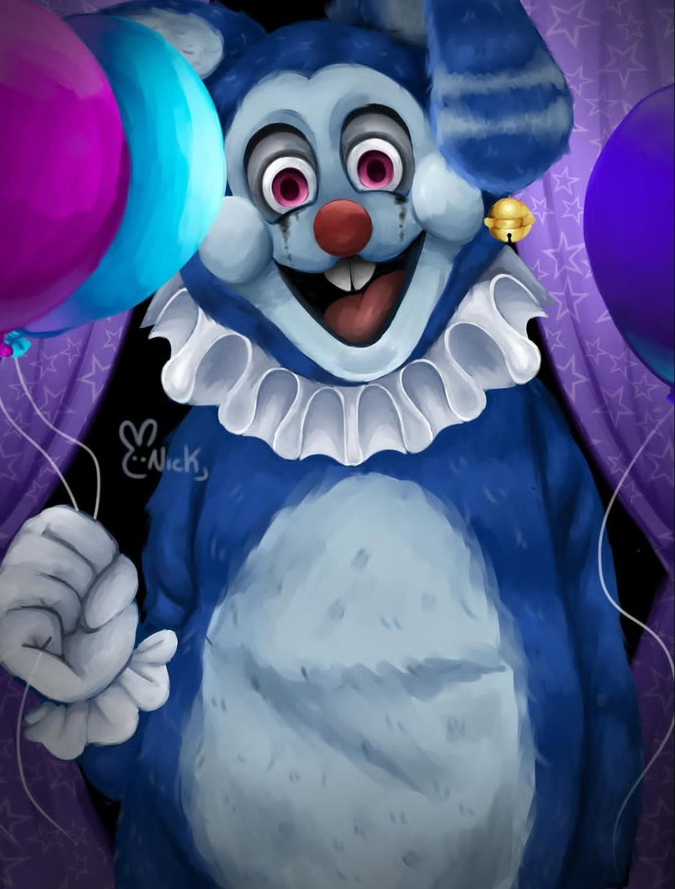
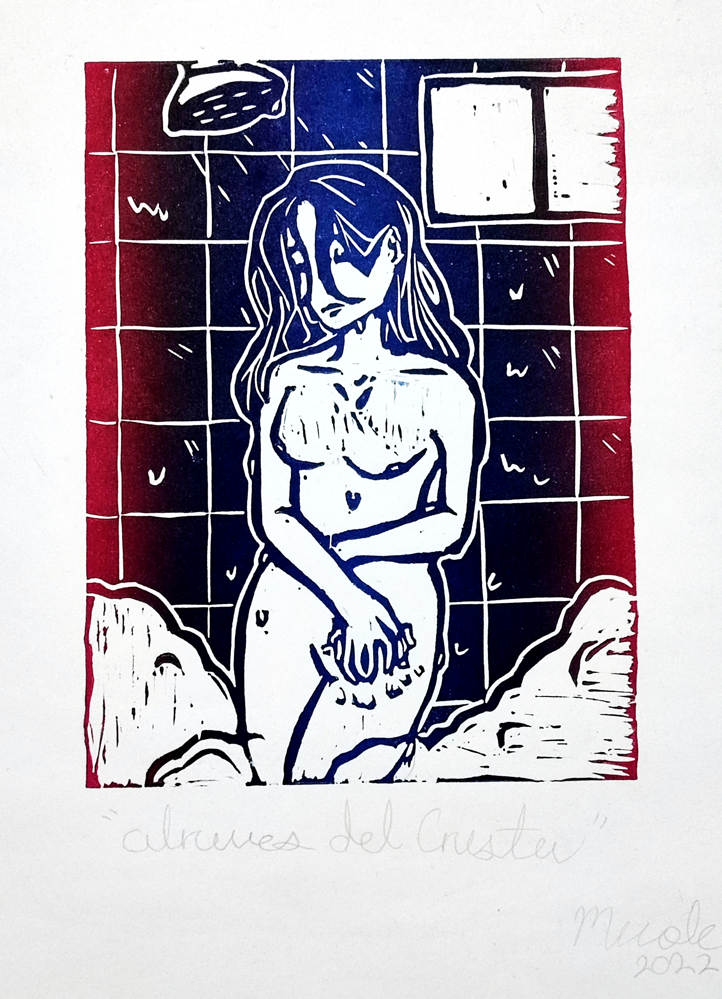

_niick_09
Sobre Mi
Soy Nicolás, un artista e ilustrador digital trans. Mi trabajo se centra en las artes plásticas, con un enfoque principal en la pintura y el grabado. Además, formo parte del colectivo Metanoia, donde impulsamos la transformación social a través del arte.
01
Coffe
La animación nos muestra un diálogo entre nuestro protagonista en una constante lucha entre sucumbir a su adicción y dependencia a la cafeína y se cuestiona si realmente lo necesita para vivir su día a día o puede vivir sin depender constantemente de esta.
02
Deseos Lunares
Deseos Lunares es una animación realizada en el motor de videojuegos Unreal Engine 5. Esta nos narra la historia de un pequeño conejo en soledad el cual desea desesperadamente compañía, amor y alguien con quien compartir el enorme y solitario bosque en el que vive. Un día noche desesperado este mira hacia el cielo y desesperadamente le pide un deseo a la Luna...

03
Ilustraciones
Serie de ilustraciones digitales en las cuales objetos o formas infantiles e inocentes se transforman perdiendo la inocencia y se convierten por completo.

04
Grabados
Grabados en linóleo con tinta hechos por mí durante mi desarrollo como artista en CEDART (Centros de Educación Artística).